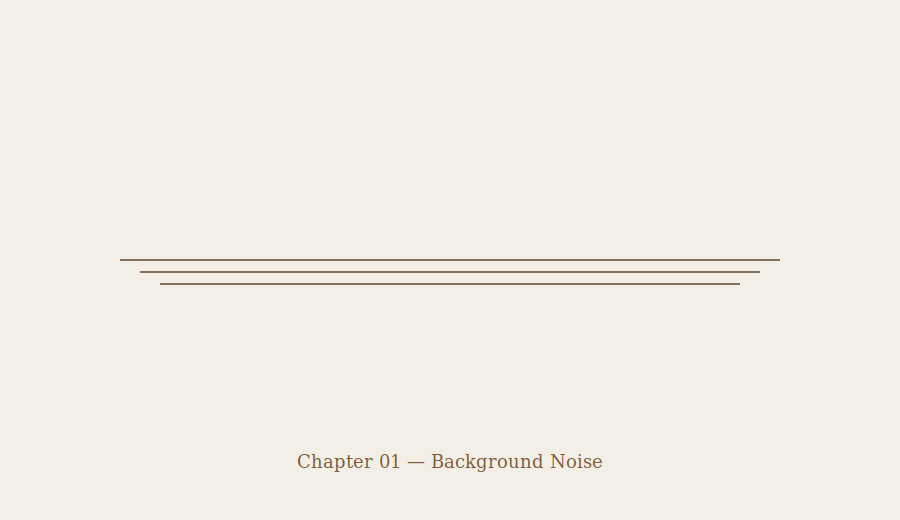

Chapter 01 — Background Noise
The news was on the way it usually is. Not loud. Not urgent. Just there.
The host said scientists were tracking something. She said officials were aware. She said there was no reason to panic.
People already knew it wasn’t normal. The president had spoken the night before. Short statement. No reassurance. No warning. Just confirmation that something existed.
After that, nothing new came on.
People kept watching anyway.